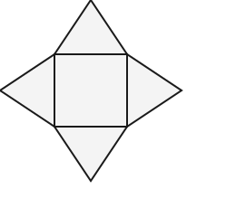

Netze von Pyramide und Kegel
Mit einem KI-Tutor lernen
Ein KI-Tutor erklärt dir diese Seite und hilft dir bei den Aufgaben. Wähl deinen Assistenten:
Mit Claude öffnen Mit ChatGPT öffnen Mit Mistral Vibe öffnen
Du nutzt dein eigenes Konto beim Anbieter. Der Assistent ist kein Angebot von lernapps.net: lernapps liefert nur Inhalte und Aufgaben. Die Wahl gilt für alle Seiten, nur auf diesem Gerät.
Eine Pyramide aufklappen
Prisma und Zylinder hast du aufgeklappt. Nach dieser Seite findest du das Netz von Pyramide und Kegel. Du weißt auch, warum die Kugel kein Netz hat. Schau dir zuerst das Netz einer Pyramide an.

Das Netz einer Pyramide mit einem Quadrat als Grundfläche.
Quelle: eigene Zeichnung. Lizenz: CC-BY-4.0.Aufgabe
Lösung
Richtige Antwort: 4
An jeder der vier Seiten des Quadrats hängt ein Dreieck. Beim Falten laufen ihre Spitzen oben zusammen.
Mehr dazu: Netze und Schrägbilder von Pyramide und Kegel (Lernlandkarte)
Dreiecke, Kreisausschnitt, Kugel
Bei einer Pyramide hängt an jeder Seite der Grundfläche ein Dreieck. Hat die Grundfläche n Ecken, sind es n Dreiecke. Beim Kegel ist die Grundfläche ein Kreis. Der Mantel ist ein Kreisausschnitt, ein Stück aus einem großen Kreis wie ein Tortenstück. Der runde Rand des Ausschnitts ist so lang wie der Rand der Grundfläche. Bei der Kugel geht das nicht: Eine Kugel lässt sich nicht flach legen, ohne zu dehnen oder zu reißen.
Globus und Weltkarte
Die Erde ist fast eine Kugel. Eine Weltkarte legt sie flach hin. Dafür muss man die Fläche an manchen Stellen dehnen, darum sehen Länder auf vielen Karten in der Nähe der Pole größer aus, als sie sind. Ein Netz ohne Verzerrung gibt es nicht.
Übung
Aufgabe
Lösung
Netz A richtige Antwort
Der Mantel des Kegels ist ein Kreisausschnitt, und der kleine Kreis hängt an seinem runden Rand. Dort passen die Ränder zusammen.
Netz B
Ein Dreieck hat gerade Seiten. Der Mantel eines Kegels ist gekrümmt, mit einem Dreieck würde der Rand des Kreises nicht passen.
Netz C
Ein Rechteck ergäbe einen Zylinder. Beim Kegel läuft der Mantel in einer Spitze zusammen, dafür braucht er einen Ausschnitt.
Der Kegelmantel ist ein Kreisausschnitt. Der runde Rand des Ausschnitts wird um den Grundkreis gebogen.
Mehr dazu: Netze und Schrägbilder von Pyramide und Kegel (Lernlandkarte)
Aufgabe
Drei Beispielaufgaben, jede mit ihrer Lösung:
Aufgabe Nr. 1
Die Grundfläche einer Pyramide hat 8 Ecken. Wie viele Dreiecke hat ihr Netz?
Tipp
An jeder Seite der Grundfläche hängt ein Dreieck.
Lösung
Richtige Antwort: 8
Aufgabe Nr. 2
Die Grundfläche einer Pyramide hat 4 Ecken. Wie viele Dreiecke hat ihr Netz?
Tipp
An jeder Seite der Grundfläche hängt ein Dreieck.
Lösung
Richtige Antwort: 4
Aufgabe Nr. 3
Die Grundfläche einer Pyramide hat 9 Ecken. Wie viele Dreiecke hat ihr Netz?
Tipp
An jeder Seite der Grundfläche hängt ein Dreieck.
Lösung
Richtige Antwort: 9
Aufgabe
Drei Beispielaufgaben, jede mit ihrer Lösung:
Aufgabe Nr. 1
Das Netz einer Pyramide besteht aus der Grundfläche und den Seitenflächen. Die Grundfläche hat 4 Ecken. Aus wie vielen Teilen besteht das Netz?
Tipp
Zähle die Dreiecke und die Grundfläche.
Lösung
Richtige Antwort: 5
Aufgabe Nr. 2
Das Netz einer Pyramide besteht aus der Grundfläche und den Seitenflächen. Die Grundfläche hat 9 Ecken. Aus wie vielen Teilen besteht das Netz?
Tipp
Zähle die Dreiecke und die Grundfläche.
Lösung
Richtige Antwort: 10
Aufgabe Nr. 3
Das Netz einer Pyramide besteht aus der Grundfläche und den Seitenflächen. Die Grundfläche hat 5 Ecken. Aus wie vielen Teilen besteht das Netz?
Tipp
Zähle die Dreiecke und die Grundfläche.
Lösung
Richtige Antwort: 6
Aufgabe
Lösung
Eine Kugel lässt sich nicht flach legen, ohne zu dehnen. richtige Antwort
Die Erde ist eine Kugel. Für die Karte muss man die Fläche an manchen Stellen dehnen oder stauchen.
Die Kartenmacher zeichnen ungenau.
Auch mit der genauesten Zeichnung bleibt die Verzerrung, weil es für die Kugel kein Netz gibt.
Die Erde hat die Form einer Pyramide.
Die Erde ist fast eine Kugel. Eine Pyramide hätte Kanten und Ecken, und ihr Netz wäre ohne Verzerrung möglich.
Die Kugel hat als einziger der Grundkörper kein Netz. Jede flache Karte der Erde verzerrt irgendwo.
Mehr dazu: Netze und Schrägbilder von Pyramide und Kegel (Lernlandkarte)
Aufgabe
Lösung
Richtige Antwort: Die Aussage stimmt.
Der Mantel wird um den Grundkreis gebogen. Der runde Rand des Ausschnitts liegt dann genau auf dem Rand der Grundfläche.
Mehr dazu: Netze und Schrägbilder von Pyramide und Kegel (Lernlandkarte)
Fehler gefunden oder eine Idee für diese App?